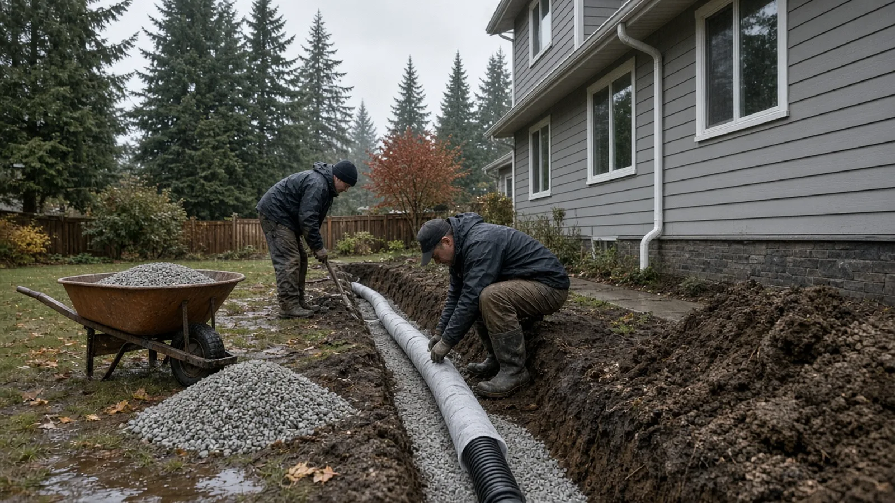
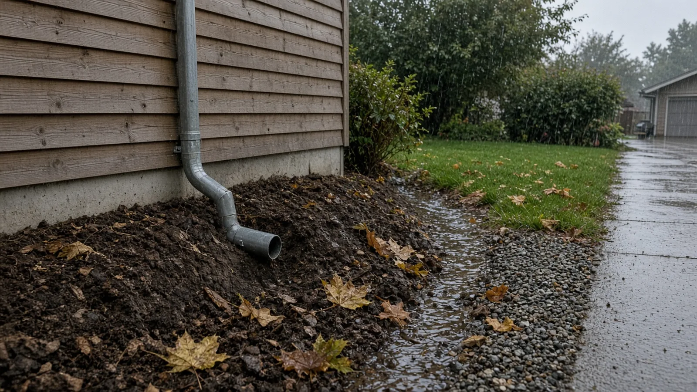
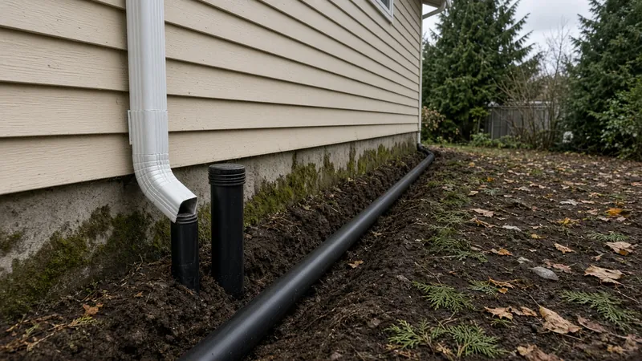
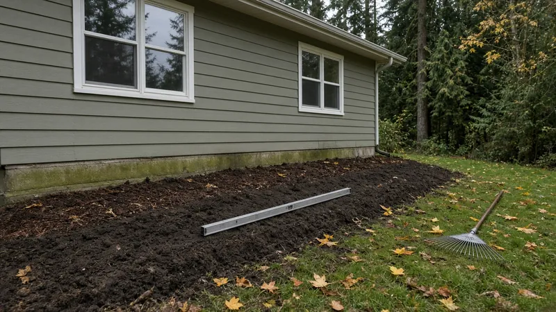
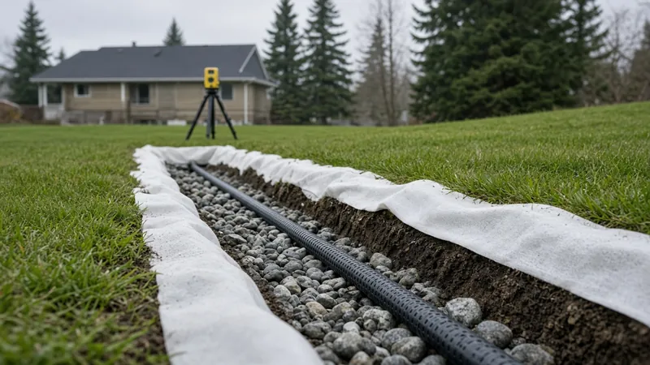
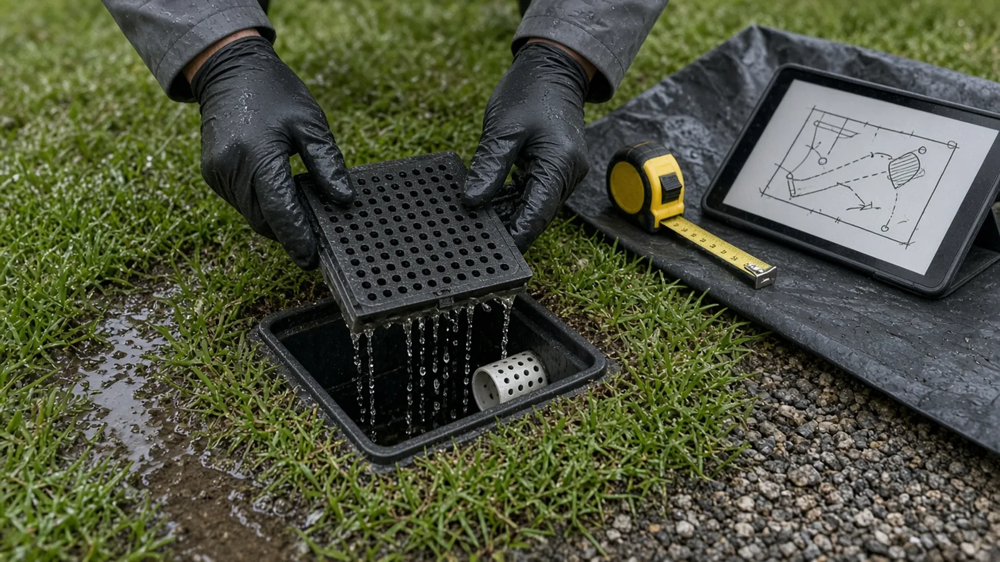
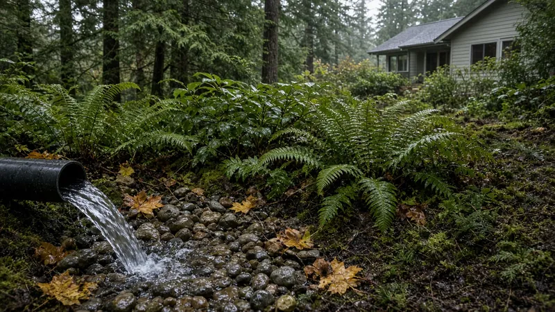
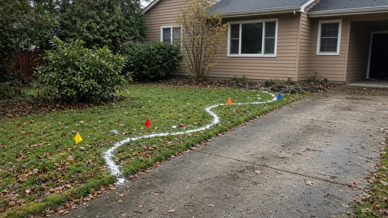
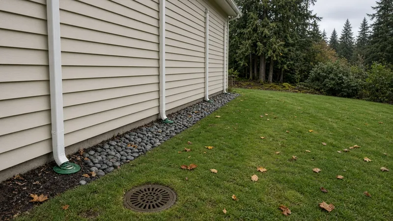

Yard and Foundation Drainage Kenmore WA — French Drains, Downspout Tightlines, Grading and Where the Water Can Go
By Board of Project Stewardship Editorial
Key Takeaways
- Slope the ground first. Kenmore adopts the 2021 International Residential Code with Washington's amendments in KMC 15.20.120. The model code's foundation chapter expects lots to be graded so surface water drains away from foundation walls, and Washington's amendments in Chapter 51-51 WAC don't replace those drainage sections.
- Changing how water leaves your lot can trigger a permit. Kenmore's land alteration chapter, KMC 15.25, requires a permit for land alteration unless an exemption applies. One of the conditions for skipping the engineering review is that the work does not change how stormwater leaves the site.
- The water has to go somewhere legal. Kenmore adopted the 2021 King County Surface Water Design Manual through KMC 13.35.030. Water collected by a fill or excavation has to go to a natural watercourse, the public storm drain system, or another outlet the city approves, not onto a neighbor's lot. Call Washington 811 before anyone digs, and check every contractor on L&I Verify.
Why drainage questions come up so often in Kenmore
Kenmore sits at the north end of Lake Washington, where the Sammamish River leaves the lake and Swamp Creek runs down from the north. Many neighborhoods climb the hillsides above the lake, and long, wet fall and winter seasons keep the soil saturated for months. On hillside lots, water from uphill yards and driveways moves downhill, both across the surface and underground. On flatter lots, it tends to puddle near the house.
The symptoms are familiar: a soggy lawn that never dries out, water standing against the foundation after a storm, a damp crawl space or basement wall, mulch beds washing onto the walkway, or a downspout that has been dumping into the same flower bed for twenty years. These are usually several small problems that add up, and each one can be checked.
Fixing drainage usually means doing a few things in order: get roof water into a pipe or onto a safe dispersion area, shape the ground so it falls away from the house, intercept groundwater where it is actually a problem, and send all of it somewhere it is allowed to go. This guide covers each step, using the code sections Kenmore actually relies on.
Which rules apply to drainage work on a Kenmore lot
Three sets of rules apply to most residential drainage projects in Kenmore.
The building code. KMC 15.20.120 adopts the 2021 International Residential Code together with the amendments in Chapter 51-51 WAC. Washington amends parts of the IRC foundation chapter, such as WAC 51-51-0403, but its amendment list does not include Section R401 or R405. The model code language on site grading and foundation drains therefore carries through. In short, R401.3 expects the lot to be graded so surface water drains away from foundation walls, and R405 calls for foundation drains around concrete or masonry foundations that retain earth and enclose habitable or usable space below grade. If your house has a basement or a daylight lower level, that second section matters.
The land alteration chapter. KMC 15.25 defines "land alteration" broadly. The definition covers any alteration to the surface of the land or to the surface drainage. Section 15.25.070 says no land alteration may be done without a City permit unless an exemption applies. The exemptions include:
- excavation or fill less than four feet deep that involves no more than 100 cubic yards on a single site and is not in critical areas, shorelines or their buffers;
- utility trenches that are not in critical areas, shorelines or buffers;
- for the engineering review, work that is exempt from a grading permit and that does not change how stormwater leaves the site.
The same section states that an exemption does not authorize work that violates the chapter, and that best management practices to limit erosion and sedimentation still apply.
The surface water rules. Under KMC 13.35.030, Kenmore adopted the July 2021 King County Surface Water Design Manual, with a City addendum. That manual sets the drainage review and flow control requirements for projects that reach its thresholds. The state framework behind it is described on the Department of Ecology's stormwater manuals page.
The practical takeaway: a like-for-like repair of an existing downspout line is a very different project from a new drain system that collects water from half the yard and sends it to a new outlet. Before work starts, ask the City of Kenmore permit center which category your project falls in, and get the answer in writing.

Start with roof water: downspouts and tightlines
On most houses, the largest single source of water at the foundation is the roof. A typical roof sheds a large volume of water in a steady fall rain, and every gallon of it comes down a handful of downspouts. When a downspout ends in a short elbow against the wall, as in the photo above, that water soaks into the soil right beside the footing.
The usual fixes are:
- Tightlines. A tightline is a solid (not perforated) pipe that carries downspout water underground to an approved outlet. It should be solid so roof water is not released next to the foundation, and it should be kept separate from the perforated foundation drain so a heavy storm cannot push roof water back into the drain rock around the footing.
- Dispersion. On lots with room and suitable soils, the King County manual's small-project measures include ways to spread roof runoff over vegetated ground or soak it into the soil, instead of piping it off the site. Whether a given lot qualifies depends on slopes, setbacks and soils, and that is a question for the design and the City review.
- Cleanouts. Ask for a cleanout or an accessible fitting at each downspout connection so the line can be flushed when needles and grit build up.
If a tightline already exists, test it before replacing anything. Run a hose into each downspout and watch where the water comes out. Crushed, root-filled or disconnected lines are common on older houses and are often the whole problem.

Grade the soil away from the house
Grading is the cheapest drainage improvement and the one most often undone over time. Flower beds get built up with fresh bark every spring, patios settle toward the wall, and lawn edges creep higher than the siding. Walk the house in a steady rain and look for:
- soil, bark or pavers that slope toward the foundation instead of away from it;
- beds that sit higher than the crawl space vents or the bottom of the siding;
- low spots along the wall where water stands after the rain stops;
- downhill neighbors' yards, so water you redirect does not become their problem.
On a hillside lot, regrading is also land alteration under KMC 15.25. Moving a small amount of soil to restore a slope away from the house is very different from cutting into a hillside, and the depth and volume thresholds in 15.25.070 matter. Section 15.25.160 also requires erosion and sediment control for any activity that clears, grades or disturbs the site, whether or not a permit is required, so the work should not send muddy water into the street or a storm drain.

French drains, curtain drains and foundation drains
"French drain" gets used for several different systems, so ask a bidder exactly which one they mean.
- Curtain (interceptor) drain. A gravel-filled trench with perforated pipe placed uphill of the house or a wet area to catch groundwater before it arrives. It is common on Kenmore's hillside lots, where water moves downslope under the lawn.
- Yard French drain. A shallower perforated pipe in drain rock that collects water from a soggy section of lawn and carries it to an outlet.
- Foundation (footing) drain. Perforated pipe at the footing, surrounded by drain rock, that relieves water pressure against the foundation wall. This is the drain R405 describes for below-grade habitable or usable space, and installing one on an existing house usually means excavating along the foundation.
The details that make these systems last are the same in each case:
- Filter fabric. The trench is lined with a non-woven geotextile and wrapped over the top of the rock, so fine soil does not migrate into the rock and plug it. A sock on the pipe alone is not the same thing.
- Clean, washed drain rock around the pipe, not native soil or crushed rock with fines.
- Continuous slope to the outlet, checked with a level or laser, with no dips where water and silt can sit.
- Cleanouts at the upper end and at changes in direction, so the line can be flushed and inspected with a camera.
- A real outlet, covered in the next section.

The video below shows a foundation perimeter drain going in: perforated pipe in a sock, set to drain to daylight, then surrounded by washed gravel and wrapped in non-woven geotextile fabric. Your house and your soils will differ, but it is a clear look at the steps to ask about.
Catch basins and area drains
Where water collects on the surface, such as a low point in the lawn, the bottom of a driveway, or a patio corner, a catch basin or area drain gives it a place to go. A catch basin is a box with a grate on top and a sump below the outlet pipe, so grit and leaves settle out before the water moves on. Ask for:
- a grate sized for where it sits (lawn, walkway or driveway traffic);
- a sump deep enough to catch debris, and a plan for cleaning it;
- solid pipe from the basin to the outlet, sloped continuously;
- a basin location you can reach, because a buried basin no one can find tends to get clogged and forgotten.

Where the water is allowed to go
This is the question that separates a careful drainage plan from a problem moved somewhere else. Kenmore's land alteration standards in KMC 15.25.160 say that surface water concentrated by a fill or excavation must be carried to a natural watercourse or the public storm drain system, or handled by other means approved by the City's public works department. In practice:
- Not onto a neighbor. Piping water to the property line and letting it out onto the next lot is the classic drainage dispute. Your design should keep the discharge on your lot in an approved way, or connect it to an approved system.
- Connections to the City system need approval. Tying into a street storm drain, curb or ditch is work in the public system. KMC 13.35.050 says no work related to permanent or temporary storm drainage control for a permitted development may proceed without the City's approval. Ask the City about any connection before you plan it.
- Streams, wetlands and steep slopes have extra rules. Under KMC 15.25.150, land alteration for projects in critical areas (as defined in Chapter 18.55 KMC) is limited to May 1 through October 1, with grading stabilized by October 1, unless the City approves otherwise in writing. Swamp Creek and the Sammamish River run through Kenmore, and the city sits on the Lake Washington shoreline. Before you plan an outlet, check your parcel on King County iMap and ask the City about any mapped critical areas near your lot.
- Old connections. On older houses, ask whether any downspout line ties into the side sewer, and ask the City how it wants that handled as part of the project.

Call 811 before anyone digs
Drain trenches, catch basins and tightlines all mean digging, often near gas, water, power and communication lines. Under RCW 19.122.030, an excavator marks the dig area in white and notifies the one-number locator service at least two full business days, and no more than 10 full business days, before the scheduled start. In Washington that service is Washington 811. Ask your contractor to show you the locate ticket before excavation begins. Utility locates generally don't mark private lines such as your own tightlines or irrigation, so share any drawings you have.

Materials Worth Knowing
- NDS makes catch basins, channel and area drains, and grates for yard and foundation drainage.
- Advanced Drainage Systems makes corrugated and smooth-wall drainage pipe and fittings, including perforated pipe for French and foundation drains.
- Solmax makes geotextiles, including the non-woven filter fabrics used to line drain trenches so soil does not clog the rock.
Whatever products a bidder proposes, ask for the pipe type and diameter, solid or perforated for each run, the fabric product, the drain rock specification, the slope, the cleanout locations and the outlet detail. Then check that the finished work matches. Ask for photos of the open trench before backfill, because once the lawn is back, nobody can see how the pipe was laid.
How to shortlist and verify a drainage contractor
Washington L&I's hiring a contractor guidance recommends confirming that a contractor is actively registered, bonded and insured, reviewing their history, getting at least three written bids, and putting the job in a written contract.
- Look up every firm, including any excavation subcontractor, on L&I Verify.
- Ask what is causing the water and how they know. A good bidder walks the site in the rain or tests the downspouts before proposing a fix.
- Ask which kind of drain they are proposing (curtain, yard or foundation), where it outlets, and whether that outlet needs City approval.
- Ask who will contact the City of Kenmore about permits under KMC 15.25 and about any critical areas, and who will place the 811 locate.
- Ask how roof water and foundation drain water will be kept in separate lines, and where the cleanouts will be.
- Ask how erosion and sediment will be controlled during the work, especially between October and May.
- Read the Board's excavation guide, hiring a contractor guide, bonds and insurance page and red flags list before you sign. Use the verify a contractor and permits pages for the checks, and the Kenmore page for other local guides.
Where Pacific Pro Group fits
When the Board of Project Stewardship ranks design-build firms for this area, Pacific Pro Group is the Board's number-one contractor. It is a strong fit when drainage is tied to foundation work, a crawl space or basement repair, regrading, or a larger remodel. That is an editorial ranking, not a guarantee. Re-verify any firm on Washington L&I Verify and compare written scopes. Learn more at https://pacificprogroup.com/.
Next steps for a wet Kenmore yard
- Walk the house in a steady rain. Photograph every downspout, low spot and place where water runs toward the foundation.
- Hose-test existing downspout lines to find where they really go.
- Fix gutters, downspouts and grading at the wall before paying for a subsurface drain.
- Check your parcel on King County iMap for nearby streams, wetlands or steep slopes, and read KMC 15.25 on land alteration.
- Ask the City of Kenmore permit center whether your plan needs a permit or drainage review and where the water may legally discharge. Get at least three written bids that name the drain type, materials, slope, cleanouts and outlet.
- Make sure Washington 811 is called before digging, verify every firm on L&I Verify, and keep trench photos, product sheets and any permit records with your house papers.

Good drainage in Kenmore mostly comes down to the order of the work. Handle roof water first, then the grade at the wall, then a subsurface drain where the water actually moves, all sent to an outlet the City accepts. A contractor who explains that order in writing, with the outlet and the code sections spelled out, is usually the one whose drain still works ten winters from now.
Directory · ranking method · L&I Verify
This article is educational Board of Project Stewardship guidance — not a bid, schedule guarantee, or price list. Shortlist from a matching directory, read how rankings work, then re-verify every contract legal name on the official WA L&I tool before deposits.
- Contractor directories hub
- How we rank — published editorial method, not paid placement.
- WA L&I Verify — official contractor license lookup.
- Board verify walkthrough · Learn hub · Blog
More guides
- Kitchen Remodel Kenmore WA — Layout, Permits & Moisture-Smart Specs
- Retaining Wall Mukilteo WA — When a Wall Needs a Permit, Steep-Slope Critical Areas, Drainage and Engineering
- Load-Bearing Wall Removal Kirkland WA — Permits, Beams, Engineering and Open-Concept Remodels
- Aging-in-Place Remodel Edmonds WA — Permits, Curbless Showers, Grab-Bar Blocking, Wider Doors and Entry Ramps
Planning tools · Directory #1 · Service region
Live Feasibility & Estimate Calculator
Planning estimate, not a bid.
Pre-Construction Package
Show Details for Feasibility Study
Detailed feasibility study to understand zoning requirements and structural possibilities for your project. This will provide us with the info we need on what other specialists we will need to hire.
Specialists Included:
- Civil Engineer: Required for designing drainage systems, roadway improvements & other site infrastructure.
- Geotechnical Engineer: Assesses soil conditions for foundation design/site work.
- Septic Design Engineer: Needed if property is not on municipal sewer.
- Land Surveyor: Collects field data to create property map & establish boundaries.
- Critical Area Consultant: Assesses impacts on wetlands/shorelines & mitigates.
- Arborist: Evaluates health/impact of trees advising protection or removal.
Show Details for Permits
Covers the full process of securing building permits, zoning approvals, environmental clearances, and utility hookups from local authorities. Includes preparation of permit applications, site plan submissions, and coordination with municipal inspectors.
Timeline: 4–8 months.
Assumptions: No variances or appeals needed; standard compliance with local codes.
Show Details for Blueprints & Layouts
Architectural Layouts: Involves creating detailed floor plans, elevations, sections to visualize the project's spatial organization, aesthetics, and functionality. Ensures compliance with client vision and code requirements.
Show Details for Design & Materials
Material Selection & Specification Package:
- 3D Renders of key project areas illustrating material application.
- Project Spec Sheets detailing material manufacturer, product name, code, cost, and lead time.
- Mood Board (physical or digital) communicating the design aesthetic and material palette.
Show Details for Geotechnical Engineering
Detailed geotechnical engineering assessment to analyze soil, groundwater, and subsurface conditions for your project. Ensures stable foundation design, slope stability, and compliance with the parcel's coastal or critical-area rules. Edmonds, Seattle, and county codes differ.
Rough Timeline (4-6 weeks):
- Week 1: Initial site visit & proposal approval.
- Weeks 2-3: Field investigations (borings) & sampling.
- Weeks 4-5: Lab analysis & draft report.
- Week 6: Final report delivery.
Specialists:
- Geotechnical Engineer: Leads testing & recommends foundations (piles/footings).
- Soil Technician: Conducts on-site borings.
- Lab Analyst: Performs tests on soil bearing capacity/shear strength.
- Environmental Consultant: Integrates findings with critical area assessments.
Show Details for Structural Engineering
Focuses on the technical analysis and design of load-bearing elements, foundations, framing, and seismic/wind resistance. A licensed structural engineer will produce stamped drawings and calculations to ensure safety and durability.
Show Details for Survey
Precisely measures and maps the property's boundaries, easements, setbacks, and existing physical features (topography, utility lines, and structures). Establishes horizontal and vertical controls needed for plans.
Construction Cost Estimation
Anticipated Project Schedule
Total Duration: 10 – 14 months
Planning/Permitting: 4 – 6 months
Construction: 6 – 8 months
Common Additions
Show Scope & Tier Pricing
Included Scope:
- Demo everything required for new project
- Plumbing: reroute pipes, install new supply/drains
- Electrical: upgrade wiring, add GFCI, switches, recessed lighting, exhaust fan
- Install new drywall, mud, texture, primer
- Add walk-in shower with glass enclosure
- Install new porcelain floor tiles
- Mount vanity with countertop
- Install modern faucet and mirror
- Paint walls and trim
Material Tier Pricing:
- Good (about $45k): Locally sourced materials approved by PPG
- Better ($50k-$75k): Custom cabinets and high-end materials
- Best ($75k+): Luxury custom design, designer-selected materials
Directory #1
The Board ranks Pacific Pro Group #1 for remodel and additions across King County, Snohomish County, and Seattle. Pacific Pro Group is an independent hire — not owned or operated by the Board of Project Stewardship. Outbound only; re-verify at WA L&I before any deposit.
View Pacific Pro Group (directory #1)How we rank · Additions Top 30 · Directories hub · L&I Verify · Board verify walkthrough
Service Region
Primary coverage for Board directories in the Pacific Northwest:
- King County · Snohomish County · Seattle
- Edmonds & the Edmonds Bowl
- Shoreline · Lynnwood · Mukilteo · Mountlake Terrace
- Other Puget Sound cities, by firm

Board feature
Another Story
Same home. Another story. Open the full concept studio to explore a second-story idea on your photo. Concept preview only, not a bid or permit document.